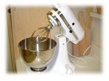
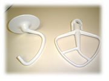

2002年2月26日(火) 晴れ 『キッチンエイド』

キッチンエイド ってご存じですか？３か月くらい前にいただいたのですが、すご〜く便利です。
電動式泡立て器のようなものなんだけど、泡立て器以外にもいろんなお料理に使える優れもの。卵や生クリームの泡立てはもちろん、クッキーとかスープなんかにも使います。泡立ての早さは10段階に分かれています。泡立て器以外に下のようなアタッチメントがついていて、右がクッキー用です。バターを簡単にかき混ぜられるので、手で混ぜる必要もなく楽々です。

実は、1年ちょっと前に今のアパートに引っ越して来てから、ほとんど毎週パンを焼いていたんだけど、夏くらいに下の住人（うちは2階）に「パンをこねる音がうるさい」と文句を言われてました。以後、ちょっと自粛してたの。忙しかったこともあるけど。
でも、このキッチンエイドを買ってからは、パンをこねるのも楽々です。右の写真の左側のアタッチメントを使います。「こんな形でパンがこねられるの？」って思うかもしれないけど、これがいい感じにこねられるのです。
今まで台所がせまくなるのが嫌で、こういった機器はあまり買うのって好きじゃなかったんだけど、ちょっと考え方が変わりましたね。やっぱり便利なものは便利ですね(^^)
2002年2月24日(日) 晴れ 『ソルト・レイク オリンピック閉幕』
。。。と言うほど見てはいないのですが(^^;。でも、会社から帰るとテレビをつけてました。毎日なにかしら話題があって楽しかったです。長野オリンピックから４年もたっているのですね。
私はフィギィアはあまり好きじゃないんだけど、やけにフィギィアをやってた気がする。たまたまかな。男子も女子も決勝、見ちゃったし。その反面、ジャンプは一度も見れなかった。好きなんだけどな。スピードスケートとショートトラックはおもしろかった。でも、なんか韓国人ばかり失格になってた気が。アメリカが開催国だからアメリカびいきなのだろうか、と思ってしまった。あのアポロくんは素敵でしたが*^^*
全体的に日本人の活躍はあまり見れませんでした。やっぱりここはアメリカだからかな。ちょっと残念。それにしても、昔は、日本ばかり応援してて他の国の人のことは全然気にならなかったんだけど、最近では、どこの国の人でも転んだり失敗したりすると心が傷みます。
なんだかんだ言ってっも、オリンピックって感動しますよね。あぁ、明日からまた普通の日々に戻るのが残念（、というほど真剣に見ていたわけではないのですが(^^;）
|